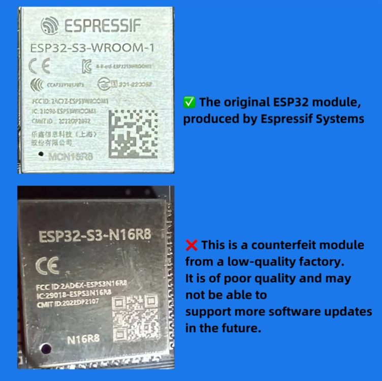

Hi! We are AMNVOLT team, and we promise that we will continue to use the best materials to make this mini radio, and continue to improve its hardware.
Many thanks to @OM0ET and the authors of the firmware [PU2CLR (Ricardo Caratti), Volos Projects, Ralph Xavier, Sunnygold, Goshante, G8PTN (Dave), R9UCL (Max Arnold), Marat Fayzullin] for their selfless and outstanding contributions to this radio!
Due to the presence of low-quality products from substandard manufacturers on the market—which may use inferior screens, main control chips, or even poor-quality batteries—users may experience degraded performance, and the hardware may not support the latest firmware updates.
We have listed on this website the stores that sell high-quality products manufactured by us. Feel free to choose and purchase from them:
V4 :Link 1（The most recommended store by the official）: Click here
Link 2: Click here
Link 3(The officially recommended AE store): Click here
Link 4(for US): Click here
Link 5(This link sells a neutral metal casing version, with the words "V4" and "AMNVOLT" not printed on the casing): Click here
Link 6: Click here
Link 7: Click here
V1 :We have stopped the production and sale of V1.
V2 :4. Ongoing update....
V3S :1. AE Choice Store : Click here
2. Banggood(Highly recommend that you purchase from this store) : Click here
3. Authorized store : Click here
4. Recommended store : Click here
5. Exclusive link for US: customers : Click here
How to distinguish radio versions when purchasing :
1. Check the exterior design as shown in the images. (Note: Some V2 radios retained the V1 design during production - contact the seller's customer service for confirmation)
2. Verify both front and back panels: Radios printed with our brand "AMNVOLT" are 100% genuine (with built-in headphone amplifier and Hi-Z, And it uses an ABS plastic casing to fix the problem of battery power consumption)
3. Review product listing comments to see images shared by other buyers.
1. Double-click the button on the home screen to enter the menu
2. On the menu page, rotate the knob to switch the menu and mode, etc. Click again to "Confirm".
3. On the home screen, rotate the knob to change the frequency band, and click again to confirm.
4. Because the case is very small,so the volume output is low after the earphone is inserted, which is a normal phenomenon, and the external audio can be connected to reach a larger volume.
1. Please use Windows 10 system to run [Flash Download Tool.zip]
2. Select the [ChipType:ESP32-S3]->[WorkMode:Devoelop]->[LoadModel:USB]
3. Select first bin file "xxxx.ino.bootloader.bin" @ "0x0"
Select second bin file "xxxx.ino.partions.bin" @ "0x8000"
Select third bin file "xxxx.ino.bin" @ "0x10000"
4. Just connect the USB Typec, keep the MINI RADIO power on, and wait for ~10 seconds for the computer to find it.
5. Set "COM: XXXXX",and click [START]
6. After the upgrade is completed, you can enjoy it
Tip:If the burning fails and the system cannot be started, don't worry, the ESP32 system will not be destroyed, you just need to re-burn it.
We have also been actively trying to find contact information for the firmware team, but due to the cross-border situation, we have been consistently unsuccessful. We hope to get in touch with the firmware team and work together to optimize and innovate the ATS MINI at both the software and hardware levels. If anyone has the contact details for the firmware team, please let us know via email.
Please be careful. Recently, some unscrupulous merchants have used cheap and inferior ESP32 modules to imitate our ATS MINI radios. There are also unscrupulous merchants who use metal casings to counterfeit our V4 motherboards. In fact, the motherboards they use are V1 versions. If the radio's casing doesn't have the words "AMNVOLT", it must be a counterfeit.
